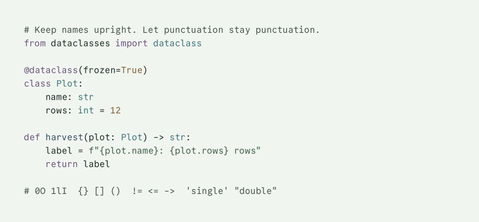

Maesglas
A terminal in mineral and ink.
Chalk is light. Shale is dark. Both keep color readable.
At the terminal

Read the specimen as plain text
# Keep names upright. Let punctuation stay punctuation.
from dataclasses import dataclass
@dataclass(frozen=True)
class Plot:
name: str
rows: int = 12
def harvest(plot: Plot) -> str:
label = f"{plot.name}: {plot.rows} rows"
return label
# 0O 1lI {} [] () != <= -> 'single' "double"
Palette
Meaning stays in the words. Color separates the parts.
- Reading
#14231E - Paths / functions
#2D475A - Links / types
#366F72 - Branches / keywords
#654C75 - Added / strings
#38573C - Warning / numbers
#795A2A - Error / removed
#662B24
Chalk has a slight green cast. Its dark ink holds a long paragraph. Bronze means attention; oxide means an error. A branch keeps its mulberry identity wherever it appears.
Every text role and all sixteen ANSI slots clear 4.5:1 on every authored content ground in both variants. Comments are opaque ink, not text made faint. Read the measured pairs.
Typography
Upright text keeps punctuation distinct.
0O 1lI
{ } [ ] ( ) != <= ->
Commit Mono supplies the lettering. Its 600-unit advance on a 1000-unit em gives a predictable cell width; the regular and bold files are real 400 and 700 outlines. [checked: Commit Mono 1.143, 2026-10-24]
Use upright regular text for comments, paths, and branch names. Reserve bold for focus, headings, and urgent state. Programming ligatures are off so the characters you read are the characters you copy.
Install the face
Download the 1.143 archive, verify its SHA-256 below, and install its regular, italic, bold, and bold italic files with your operating system's font installer. The family name in the files is CommitMono. [checked: Commit Mono 1.143, 2026-10-24]
f7d1f26a7c7554800a996f76f5d706bf0648b936ca2a66b5bc4d46e3a2c49ed0The page uses only upright regular and bold. Its local copies and the shaped outline cache are covered by the font notice. Font installation is a separate, explicit step.
Size the pane, not the display
The default is 15 pt with 12 pt horizontal padding on each side of each pane. Fit the content in logical display points, not physical pixels:
panes * (columns * size * advance + 2 * padding) <= display width
2 * (80 * 15 * 0.6 + 2 * 12) = 1488 pt| Display width in points | Two 80-column panes | Recommendation |
|---|---|---|
| 1280 | Up to 12.83 pt | Use one pane at 15 pt |
| 1440 | Up to 14.50 pt | Use one pane at 15 pt |
| 1512 | Up to 15.25 pt | 15 pt; zoom for single-pane reading |
| 1728 | Up to 17.50 pt | 15 pt; zoom for single-pane reading |
| 1920 | Up to 19.50 pt | 15 pt; zoom for single-pane reading |
Two panes at 18 pt need 1776 pt. Shrinking below the default to fit another pane is not the recommended layout.
Checked terminal settings
The Ghostty port sets 15 pt, 12 pt padding, 6% extra cell height, no synthetic styles, and contextual spacing with calt=1. The ss01=0, ss02=0, liga=0, and dlig=0 settings preserve the default letterforms without programming ligatures. It binds Super+Shift+Enter to split zoom. This enlarges the active pane, not the font. On macOS, the text-size defaults are Command+= or Command++ to increase, Command+- to decrease, and Command+0 to reset the active surface. Enlarge the reading pane, then reset its text size before returning to two panes. [checked: Ghostty 1.3.1, 2026-10-24]
The terminal supplies the face to nano, Vim, and the command-line ports. They do not install or choose a second face. [checked: nano 9.2 and Vim 9.1, 2026-10-24]
Unverified application settings
These font settings are starting points, separate from the validated color ports. Each needs a native font and layout check before adoption.
| Application | Intended setting | Status |
|---|---|---|
| iTerm2 | Text: CommitMono Regular 15; disable ligatures | [unchecked] |
| Terminal.app | Profile font: CommitMono Regular 15 | [unchecked] |
| Alacritty | font.normal.family = "CommitMono"; font.size = 15 | [unchecked] |
| kitty | font_family CommitMono; font_size 15; disable_ligatures always | [unchecked] |
| WezTerm | font = wezterm.font("CommitMono"); font_size = 15 | [unchecked] |
| Windows Terminal | font.face: "CommitMono"; font.size: 15 | [unchecked] |
| VS Code | editor.fontFamily: "CommitMono"; size 16; line height 26; ligatures off | [unchecked] |
| Zed | buffer_font_family: "CommitMono"; size 16; ligatures off | [unchecked] |
| Helix and Neovim | Use the terminal's face and cell geometry | [unchecked] |
Measured macOS reference
CoreText measures the settled 15 pt face as 9-point cells with an 8.1-point x-height. The reference specimen therefore uses 15 CSS px: 9 CSS px cells and an 8.1 CSS px x-height on the Mac, where logical points and CSS px agree. A 20 CSS px drawing would have 12 CSS px cells, one-third larger; it is not the macOS terminal reference. [checked: Commit Mono 1.143, CoreText on macOS, 2026-10-24]
Browser CSS points use a different unit conversion. Other applications and platforms require their own measurement; there is no universal integrated-terminal pixel target. Verify 0O, 1lI, quotes, braces, and arrow punctuation with the delivered font.
The site, native font-feature settings, and shaped outlines use calt=1, ss01=0, ss02=0, liga=0, and dlig=0. The outline extractor shapes complete lines before applying syntax colors, so contextual spacing also crosses color boundaries. Every shaped glyph retains its 600-unit advance and every character retains its own glyph; no programming ligatures are introduced. [checked: Commit Mono 1.143 and uharfbuzz 0.57.0, 2026-10-24]
Install
Download the ports Validation and limitations
Choose one variant across the terminal and its tools. The examples use chalk; substitute shale for the dark companion. Set THEME_DIR to the destination you chose for that application. Back up existing files before copying. These files change appearance, not your shell setup.
Extract the ports archive and run the copy commands from its root, where the ports/ directory lives. The same commands work from the repository root.
Install the face separately using the typography guide. Fonts are not included in the ports. Maesglas is independent of every tool listed below.
Ghostty
Load the file with config-file. [checked: Ghostty 1.3.1, 2026-10-24]
mkdir -p "${THEME_DIR:?Choose a destination directory}"
cp ports/ghostty/maesglas-chalk.conf "$THEME_DIR/maesglas-chalk.conf"After copying, load the preset with the following setting. Replace /path/to with your chosen directory when editing a configuration file. [checked: Ghostty 1.3.1, 2026-10-24]
config-file = /path/to/maesglas-chalk.confStarship
Point STARSHIP_CONFIG at the preset. [checked: Starship 1.27.0, 2026-10-24]
mkdir -p "${THEME_DIR:?Choose a destination directory}"
cp ports/starship/maesglas-chalk.toml "$THEME_DIR/maesglas-chalk.toml"After copying, load the preset with the following setting. Replace /path/to with your chosen directory when editing a configuration file. [checked: Starship 1.27.0, 2026-10-24]
export STARSHIP_CONFIG="$THEME_DIR/maesglas-chalk.toml"Vim
Source the appearance file after your other settings. [checked: Vim 9.1, 2026-10-24]
mkdir -p "${THEME_DIR:?Choose a destination directory}"
cp ports/vim/maesglas-chalk.vim "$THEME_DIR/maesglas-chalk.vim"bat and delta
Build the theme cache before selecting the theme. [checked: bat 0.26.1 and delta 0.20.1, 2026-10-24]
mkdir -p "${THEME_DIR:?Choose a destination directory}"
cp ports/textmate/maesglas-chalk.tmTheme "$THEME_DIR/maesglas-chalk.tmTheme"delta
Include the file, then compose the named feature. [checked: delta 0.20.1, 2026-10-24]
mkdir -p "${THEME_DIR:?Choose a destination directory}"
cp ports/delta/maesglas-chalk.gitconfig "$THEME_DIR/maesglas-chalk.gitconfig"Git
Include the file; identity and signing remain unchanged. [checked: Git 2.56.0, 2026-10-24]
mkdir -p "${THEME_DIR:?Choose a destination directory}"
cp ports/git/maesglas-chalk.gitconfig "$THEME_DIR/maesglas-chalk.gitconfig"nano
Include the file after other appearance settings. [checked: nano 9.2, 2026-10-24]
mkdir -p "${THEME_DIR:?Choose a destination directory}"
cp ports/nano/maesglas-chalk.nanorc "$THEME_DIR/maesglas-chalk.nanorc"fzf
Source the file after other picker options. [checked: fzf 0.74.5, 2026-10-24]
mkdir -p "${THEME_DIR:?Choose a destination directory}"
cp ports/fzf/maesglas-chalk.sh "$THEME_DIR/maesglas-chalk.sh"tmux
Source the file from your configuration. [checked: tmux 3.8, 2026-10-24]
mkdir -p "${THEME_DIR:?Choose a destination directory}"
cp ports/tmux/maesglas-chalk.conf "$THEME_DIR/maesglas-chalk.conf"eza
Copy the file as theme.yml in EZA_CONFIG_DIR. [checked: eza 0.23.5, 2026-10-24]
mkdir -p "${THEME_DIR:?Choose a destination directory}"
cp ports/eza/maesglas-chalk.yml "$THEME_DIR/theme.yml"glow
Pass the file to glow --style. [checked: glow 3.0.0, 2026-10-24]
mkdir -p "${THEME_DIR:?Choose a destination directory}"
cp ports/glow/maesglas-chalk.json "$THEME_DIR/maesglas-chalk.json"lazygit
Merge the gui mapping into your configuration. [checked: lazygit 0.66.2, 2026-10-24]
mkdir -p "${THEME_DIR:?Choose a destination directory}"
cp ports/lazygit/maesglas-chalk.yml "$THEME_DIR/maesglas-chalk.yml"yazi
Copy as theme.toml; use the matching terminal variant. [checked: yazi 26.9.1, 2026-10-24]
mkdir -p "${THEME_DIR:?Choose a destination directory}/flavors"
cp ports/yazi/maesglas-chalk.toml "$THEME_DIR/theme.toml" && cp -R ports/yazi/maesglas-chalk.yazi "$THEME_DIR/flavors/"Alacritty
Import the file from [general].import. [checked: Alacritty 0.17.0, 2026-10-24]
mkdir -p "${THEME_DIR:?Choose a destination directory}"
cp ports/alacritty/maesglas-chalk.toml "$THEME_DIR/maesglas-chalk.toml"kitty
Include the file from your configuration. [checked: kitty 0.49.2, 2026-10-24]
mkdir -p "${THEME_DIR:?Choose a destination directory}"
cp ports/kitty/maesglas-chalk.conf "$THEME_DIR/maesglas-chalk.conf"WezTerm
Put the file in colors/; select Maesglas Chalk. [checked: WezTerm 20240203-110809-5046fc22, 2026-10-24]
mkdir -p "${THEME_DIR:?Choose a destination directory}"
cp ports/wezterm/maesglas-chalk.toml "$THEME_DIR/maesglas-chalk.toml"Neovim
Put the file in colors/; run :colorscheme maesglas-chalk. [checked: Neovim 0.12.6, 2026-10-24]
mkdir -p "${THEME_DIR:?Choose a destination directory}"
cp ports/neovim/maesglas-chalk.lua "$THEME_DIR/maesglas-chalk.lua"Helix
Put the file in themes/; select maesglas-chalk. [checked: Helix 25.07.1, 2026-10-24]
mkdir -p "${THEME_DIR:?Choose a destination directory}"
cp ports/helix/maesglas-chalk.toml "$THEME_DIR/maesglas-chalk.toml"VS Code
Copy the extension folder, then select Maesglas Chalk. [checked: VS Code 1.143.1, 2026-10-24]
mkdir -p "${THEME_DIR:?Choose an extensions directory}/maesglas"
cp ports/vscode/*.json ports/vscode/LICENSE "$THEME_DIR/maesglas/"Zed
Put the file in themes/, then select Maesglas Chalk. [checked: Zed schema 0.2.0, 2026-10-24]
mkdir -p "${THEME_DIR:?Choose a destination directory}"
cp ports/zed/maesglas-chalk.json "$THEME_DIR/maesglas-chalk.json"iTerm2
Import the file through the profile's color presets. [checked: iTerm2 3.6.6, 2026-10-24]
mkdir -p "${THEME_DIR:?Choose a destination directory}"
cp ports/iterm2/maesglas-chalk.itermcolors "$THEME_DIR/maesglas-chalk.itermcolors"Windows Terminal
Add the object to schemes; select Maesglas Chalk. [checked: Windows Terminal 1.25.2733.0, 2026-10-24]
mkdir -p "${THEME_DIR:?Choose a destination directory}"
cp ports/windows-terminal/maesglas-chalk.json "$THEME_DIR/maesglas-chalk.json"k9s
Put the file in skins/; set k9s.ui.skin: maesglas-chalk. [checked: k9s 0.51.0, 2026-10-24]
mkdir -p "${THEME_DIR:?Choose a destination directory}"
cp ports/k9s/maesglas-chalk.yaml "$THEME_DIR/maesglas-chalk.yaml"gh-dash
Merge the theme mapping into your configuration. Fixed status icons are not contrast-certified; see the port notes. [checked: gh-dash 4.26.0, 2026-10-24]
mkdir -p "${THEME_DIR:?Choose a destination directory}"
cp ports/gh-dash/maesglas-chalk.yml "$THEME_DIR/maesglas-chalk.yml"fast-syntax-highlighting
Source the file after loading the plugin. [checked: fast-syntax-highlighting 1.67, 2026-10-24]
mkdir -p "${THEME_DIR:?Choose a destination directory}"
cp ports/fast-syntax-highlighting/maesglas-chalk.zsh "$THEME_DIR/maesglas-chalk.zsh"For cache setup, feature composition, validation methods, and limitations, read the port notes. Unverified formats are omitted.
Font setup
Download the 1.143 archive, verify its SHA-256 below, and install its regular, italic, bold, and bold italic files with your operating system's font installer. The family name in the files is CommitMono. [checked: Commit Mono 1.143, 2026-10-24]
f7d1f26a7c7554800a996f76f5d706bf0648b936ca2a66b5bc4d46e3a2c49ed0The page uses only upright regular and bold. Its local copies and the shaped outline cache are covered by the font notice. Font installation is a separate, explicit step.
Continue with font settings and pane arithmetic.
Download the installation source.
Included ports
Ghostty, Starship, Vim, bat and delta, delta, Git, nano, fzf, tmux, eza, glow, lazygit, yazi, Alacritty, kitty, WezTerm, Neovim, Helix, VS Code, Zed, iTerm2, Windows Terminal, k9s, gh-dash, fast-syntax-highlighting. See the installation notes for dated validation methods and limitations. [checked: port set 2026.10.0, 2026-10-24]
Port reference
Validation, cache setup, and limitations
Every shipped port is generated. The gate runs native parsers, renderers, published schemas, or documented key checks in disposable configuration and cache directories. The method column is the boundary: a schema check does not establish application import or rendering.
Tested scope
| Port | Validation method | Version and date |
|---|---|---|
| Ghostty | +validate-config on both complete files; macOS only | [checked: Ghostty 1.3.1, 2026-10-24] |
| Starship | print-config and prompt rendering in a synthetic repository | [checked: Starship 1.27.0, 2026-10-24] |
| Vim | Headless load and highlight query | [checked: Vim 9.1, 2026-10-24] |
| bat and delta | Theme cache build, named-theme listing, and syntax rendering | [checked: bat 0.26.1 and delta 0.20.1, 2026-10-24] |
| delta | Named-feature diff rendering using the generated syntax theme | [checked: delta 0.20.1, 2026-10-24] |
| Git | Parse every color with config --get-color | [checked: Git 2.56.0, 2026-10-24] |
| nano | PTY startup for all ten named syntaxes | [checked: nano 9.2, 2026-10-24] |
| fzf | Native picker startup with generated color options | [checked: fzf 0.74.5, 2026-10-24] |
| tmux | Independent server, source file, and option queries | [checked: tmux 3.8, 2026-10-24] |
| eza | Classified fixture listing with the generated theme | [checked: eza 0.23.5, 2026-10-24] |
| glow | Markdown and code rendering through the style loader | [checked: glow 3.0.0, 2026-10-24] |
| lazygit | PTY startup in a disposable repository | [checked: lazygit 0.66.2, 2026-10-24] |
| yazi | PTY startup with isolated configuration | [checked: yazi 26.9.1, 2026-10-24] |
| Alacritty | Native migrate --dry-run TOML loader | [checked: Alacritty 0.17.0, 2026-10-24] |
| kitty | Native +runpy and kitty.config.load_config; every color queried | [checked: kitty 0.49.2, 2026-10-24] |
| WezTerm | Native show-keys with color.load_scheme and exact Lua assertions | [checked: WezTerm 20240203-110809-5046fc22, 2026-10-24] |
| Neovim | --headless colorscheme load; every authored highlight and ANSI slot queried | [checked: Neovim 0.12.6, 2026-10-24] |
| Helix | Published theme keys and native PTY theme loading | [checked: Helix 25.07.1, 2026-10-24] |
| VS Code | Official color-theme schema evaluated from pinned source, plus color registry | [checked: VS Code 1.143.1, 2026-10-24] |
| Zed | Published theme schema 0.2.0; unknown properties rejected | [checked: Zed schema 0.2.0, 2026-10-24] |
| iTerm2 | plutil -lint, upstream preset keys, and exact sRGB round-trip | [checked: iTerm2 3.6.6, 2026-10-24] |
| Windows Terminal | Microsoft settings schema, with the scheme in schemes | [checked: Windows Terminal 1.25.2733.0, 2026-10-24] |
| k9s | Upstream NewStyles().Load parser and embedded schema; all colors queried | [checked: k9s 0.51.0, 2026-10-24] |
| gh-dash | Upstream ParseConfig and theme initialization; all theme fields queried | [checked: gh-dash 4.26.0, 2026-10-24] |
| fast-syntax-highlighting | Pinned plugin loaded in isolated Zsh; active and recursive styles | [checked: fast-syntax-highlighting 1.67, 2026-10-24] |
Additional port installation
Choose the application-specific destination as THEME_DIR. Each example has one preparation line and one copy line. Substitute shale for chalk, except that the editor extension includes both variants.
Alacritty
Import the file from [general].import. [checked: Alacritty 0.17.0, 2026-10-24]
mkdir -p "${THEME_DIR:?Choose a destination directory}"
cp ports/alacritty/maesglas-chalk.toml "$THEME_DIR/maesglas-chalk.toml"kitty
Include the file from your configuration. [checked: kitty 0.49.2, 2026-10-24]
mkdir -p "${THEME_DIR:?Choose a destination directory}"
cp ports/kitty/maesglas-chalk.conf "$THEME_DIR/maesglas-chalk.conf"WezTerm
Put the file in colors/; select Maesglas Chalk. [checked: WezTerm 20240203-110809-5046fc22, 2026-10-24]
mkdir -p "${THEME_DIR:?Choose a destination directory}"
cp ports/wezterm/maesglas-chalk.toml "$THEME_DIR/maesglas-chalk.toml"Neovim
Put the file in colors/; run :colorscheme maesglas-chalk. [checked: Neovim 0.12.6, 2026-10-24]
mkdir -p "${THEME_DIR:?Choose a destination directory}"
cp ports/neovim/maesglas-chalk.lua "$THEME_DIR/maesglas-chalk.lua"Helix
Put the file in themes/; select maesglas-chalk. [checked: Helix 25.07.1, 2026-10-24]
mkdir -p "${THEME_DIR:?Choose a destination directory}"
cp ports/helix/maesglas-chalk.toml "$THEME_DIR/maesglas-chalk.toml"VS Code
Copy the extension folder, then select Maesglas Chalk. [checked: VS Code 1.143.1, 2026-10-24]
mkdir -p "${THEME_DIR:?Choose an extensions directory}/maesglas"
cp ports/vscode/*.json ports/vscode/LICENSE "$THEME_DIR/maesglas/"Zed
Put the file in themes/, then select Maesglas Chalk. [checked: Zed schema 0.2.0, 2026-10-24]
mkdir -p "${THEME_DIR:?Choose a destination directory}"
cp ports/zed/maesglas-chalk.json "$THEME_DIR/maesglas-chalk.json"iTerm2
Import the file through the profile's color presets. [checked: iTerm2 3.6.6, 2026-10-24]
mkdir -p "${THEME_DIR:?Choose a destination directory}"
cp ports/iterm2/maesglas-chalk.itermcolors "$THEME_DIR/maesglas-chalk.itermcolors"Windows Terminal
Add the object to schemes; select Maesglas Chalk. [checked: Windows Terminal 1.25.2733.0, 2026-10-24]
mkdir -p "${THEME_DIR:?Choose a destination directory}"
cp ports/windows-terminal/maesglas-chalk.json "$THEME_DIR/maesglas-chalk.json"k9s
Put the file in skins/; set k9s.ui.skin: maesglas-chalk. [checked: k9s 0.51.0, 2026-10-24]
mkdir -p "${THEME_DIR:?Choose a destination directory}"
cp ports/k9s/maesglas-chalk.yaml "$THEME_DIR/maesglas-chalk.yaml"gh-dash
Merge the theme mapping into your configuration. [checked: gh-dash 4.26.0, 2026-10-24]
mkdir -p "${THEME_DIR:?Choose a destination directory}"
cp ports/gh-dash/maesglas-chalk.yml "$THEME_DIR/maesglas-chalk.yml"fast-syntax-highlighting
Source the file after loading the plugin. [checked: fast-syntax-highlighting 1.67, 2026-10-24]
mkdir -p "${THEME_DIR:?Choose a destination directory}"
cp ports/fast-syntax-highlighting/maesglas-chalk.zsh "$THEME_DIR/maesglas-chalk.zsh"Cache and feature composition
Place the TextMate files in the themes directory below BAT_CONFIG_DIR. Run bat cache --build, then select maesglas-chalk or maesglas-shale through BAT_THEME. A rebuilt cache is required after a palette change. [checked: bat 0.26.1 and delta 0.20.1, 2026-10-24]
Use the same XDG cache root for both tools. Delta reads XDG_CACHE_HOME/bat, not a custom BAT_CACHE_PATH. Build the cache there when composing the tools. [checked: bat 0.26.1 and delta 0.20.1, 2026-10-24]
Include the delta file from your Git configuration. Add maesglas-chalk to the existing feature list rather than replacing it. Keep behavior features separate from color features. [checked: delta 0.20.1, 2026-10-24]
[delta]
features = review maesglas-chalk
[delta "review"]
side-by-side = true
[delta "interactive"]
features = maesglas-chalk
color-only = true
side-by-side = false
line-numbers = falseInteractive patch output must retain its patch structure. The palette does not install a pager, rewrite interactive.diffFilter, or turn on side-by-side output by itself. [checked: delta 0.20.1, 2026-10-24]
The nano port uses terminal slots and default backgrounds. The selected range is bold rather than inverted onto an ink-colored ANSI background. Search uses bold bronze. All ten syntaxes are small regular-expression rules, not language parsers. [checked: nano 9.2, 2026-10-24]
The fzf fragment leaves color alone under NO_COLOR, TERM=dumb, or redirected output. Source it in the interactive shell after other options. [checked: fzf 0.74.5, 2026-10-24]
The glow port renders code blocks in plain ink. Its embedded syntax formatter reduces colors to the fixed 256-color cube, and the CLI does not expose the formatter override. Plain code avoids a second, uncontrolled palette. [checked: glow 3.0.0, 2026-10-24]
The Yazi file clears the default colored icon tables. File kinds use letters, paths, and permission text instead of private-use glyphs. Its flavor includes the matching syntax theme. Copy the complete flavor directory, not just the selection file. [checked: yazi 26.9.1, 2026-10-24]
Rulings and limitations
LEG-01: the editor extension emits editor.findMatchForeground and editor.findMatchHighlightForeground as ink. Its match and match-active grounds are lighter than the original search grounds. The gate audits every emitted syntax foreground on both actual match fills, not only the replacement ink. [checked: VS Code 1.143.1, 2026-10-24]
FG-CLAUDE-LIGHTBASE was evaluated against all six installed base registries and all 72 accepted color tokens. A fully overridden candidate fixes every configurable foreground, including the misleadingly named background accent and the two word-diff tokens used for +N and -N counters. The same word tokens also paint inline backgrounds; inline word text inherits the normal text role, with no independent foreground override. Making the counters readable therefore makes word-diff text unreadable, so this format is omitted. [checked: Claude Code 2.1.310, 2026-10-24]
Claude Code compatibility is a factual product statement, not an endorsement: Maesglas is independent of Anthropic. The format also cannot replace dimColor or faint attributes, literal syntax-formatter colors, or external-tool output. The check inspected the installed renderer without starting an authenticated session. [checked: Claude Code 2.1.310, 2026-10-24]
| Shared-token bound | Chalk | Shale |
|---|---|---|
| Best possible simultaneous counter/word contrast | 3.845:1 | 4.100:1 |
The bound is the square root of ink/canvas contrast: a shared color must contrast with the canvas as foreground and with ink as background. Both maxima are below 4.5:1. The gate reproduces this blocker instead of exempting either failing pair. Its inputs and measured candidate pairs are in identity/port-validation.json. [checked: Claude Code 2.1.310, 2026-10-24]
FG-K9S-TRUECOLOR: every native skin color, including chart arrays, resource maps, help, prompt borders, and logo messages, is palette hex. The parsed skin retains these hex values throughout. The YAML files use JSON syntax, a YAML-compatible representation. [checked: k9s 0.51.0, 2026-10-24]
FG-GHDASH-KEYS uses the actual 4.26 parser fields: text.actor, background.selected, the three border fields, and the six author association icon fields. FG-GHDASH-INVERTED assigns ink to inverted; COV-05 assigns the warning slot to warning, not the number or error slot. Both parsed values and initialized theme colors are queried. [checked: gh-dash 4.26.0, 2026-10-24]
FG-GHDASH-ICONS: issue and pull-request state icons, the merged glyph, the logo, and API-supplied label colors are not configurable through the theme. The parser accepts icon.unknownrole, but theme initialization leaves that color at fixed index 178. These upstream colors are not Maesglas colors, and several fail 4.5:1. The port does not make the entire application contrast-compliant. [checked: gh-dash 4.26.0, 2026-10-24]
COV-01: the shell theme replaces the complete style registry after the plugin loads. Primary, default, and recursive namespaces use semantic ANSI foregrounds; there are no fixed xterm-256 indices, ANSI-background inversions, or unthemed secondary themes. Use the matching terminal variant. [checked: fast-syntax-highlighting 1.67, 2026-10-24]
Omitted formats
Omitted formats have no shipped draft files and make no compatibility claims.
| Format | Reason |
|---|---|
| btop | Its native banner uses foreground colors that the theme cannot replace. Observed #787878 reaches 4.007:1 on Chalk and 4.168:1 on Shale. The input and source are in identity/rejections.json. [checked: btop 1.4.7, 2026-10-24] |
| Claude Code | Counter foregrounds and word-diff backgrounds share tokens; the format cannot override word-diff text independently. Shared colors cannot meet both 4.5:1 pairs with the Maesglas canvas and ink. The installed-registry digest and proof are in identity/port-validation.json. [checked: Claude Code 2.1.310, 2026-10-24] |
| Terminal.app | Archived-color profile import was not verified. [unchecked] |
| Sublime Text | The TextMate file was not loaded in this application. [unchecked] |
Measured contrast
Reading pairs and color-vision separation
The source is identity/maesglas.json. Values below are the delivered 8-bit sRGB colors, not unrounded coordinates or sampled antialiasing.
Every text role and every ANSI foreground is tested on every content ground. The threshold is 4.5:1 without rounding. Boundaries require 3:1. The bright bank repeats its corresponding accent; weight does not change hue.
APCA uses SAPC 0.0.98G-4g. Positive Lc is dark text on a light ground. Default prose requires absolute Lc 90 on canvas; comments and line numbers require 75. All three require 60 on emphasis grounds. These are project targets, not a font certification or a claim of WCAG 3 conformance.
The macOS reference plate uses 15 CSS px regular type: the settled 15 pt face has 9-point cells and an 8.1-point x-height, matching 9 CSS px cells and an 8.1 CSS px x-height on the Mac. Editor guidance uses 16 px regular. Captions use 16 px regular, and headings use the real 700 face. The same contrast thresholds hold at each size. Text remains opaque.
Delivered colors
| Primitive | Chalk | Shale |
|---|---|---|
| canvas | #F1F5F0 | #0D1613 |
| surface | #E9F0E9 | #121D19 |
| selection | #D9EBE2 | #212F2A |
| search | #F4ECD8 | #262114 |
| search-active | #F0E6CD | #312B1C |
| match | #F7F2E3 | #2B2618 |
| match-active | #F6EFDD | #332D1E |
| added | #E6F1E6 | #1B241B |
| removed | #FAE9E5 | #2B1E1B |
| changed | #F3EDDC | #252116 |
| added-word | #DCEBDC | #232F23 |
| removed-word | #F7E1DB | #372723 |
| ink | #14231E | #F1F6F0 |
| secondary | #404D44 | #CDD7D0 |
| muted | #47514A | #C8D3CB |
| oxide | #662B24 | #E99E92 |
| bronze | #795A2A | #FBDCB2 |
| juniper | #38573C | #B2D8B6 |
| slate | #2D475A | #9FBDD5 |
| mulberry | #654C75 | #DECCEA |
| petroleum | #366F72 | #C9EDEE |
| boundary | #53655E | #90A49C |
ANSI assignments
| Slot | Role |
|---|---|
| 0 | ink |
| 1 | oxide |
| 2 | juniper |
| 3 | bronze |
| 4 | slate |
| 5 | mulberry |
| 6 | petroleum |
| 7 | secondary |
| 8 | muted |
| 9 | oxide |
| 10 | juniper |
| 11 | bronze |
| 12 | slate |
| 13 | mulberry |
| 14 | petroleum |
| 15 | ink |
All sixteen slots are text colors, including slot 0. A tool that hard-codes a background from these slots needs a dedicated port. Arbitrary foreground/background permutations, faded SGR text, and the fixed 256-color cube are not authored combinations.
Chalk reading pairs
| Text | Ground | WCAG 2 | APCA Lc |
|---|---|---|---|
| foreground | canvas | 14.787 | +96.54 |
| foreground | surface | 14.047 | +93.14 |
| foreground | selection | 13.137 | +88.86 |
| foreground | search | 13.838 | +92.18 |
| foreground | search-active | 13.116 | +88.76 |
| foreground | match | 14.559 | +95.50 |
| foreground | match-active | 14.205 | +93.88 |
| foreground | added | 14.035 | +93.09 |
| foreground | removed | 13.850 | +92.23 |
| foreground | changed | 13.933 | +92.62 |
| foreground | added-word | 13.158 | +88.96 |
| foreground | removed-word | 12.994 | +88.18 |
| comment | canvas | 8.066 | +83.69 |
| comment | surface | 7.662 | +80.29 |
| comment | selection | 7.165 | +76.00 |
| comment | search | 7.548 | +79.32 |
| comment | search-active | 7.154 | +75.91 |
| comment | match | 7.941 | +82.65 |
| comment | match-active | 7.748 | +81.03 |
| comment | added | 7.655 | +80.24 |
| comment | removed | 7.555 | +79.38 |
| comment | changed | 7.600 | +79.76 |
| comment | added-word | 7.177 | +76.11 |
| comment | removed-word | 7.087 | +75.32 |
| line-number | canvas | 7.493 | +81.86 |
| line-number | surface | 7.118 | +78.47 |
| line-number | selection | 6.656 | +74.18 |
| line-number | search | 7.012 | +77.50 |
| line-number | search-active | 6.646 | +74.08 |
| line-number | match | 7.377 | +80.83 |
| line-number | match-active | 7.198 | +79.20 |
| line-number | added | 7.111 | +78.41 |
| line-number | removed | 7.018 | +77.56 |
| line-number | changed | 7.060 | +77.94 |
| line-number | added-word | 6.667 | +74.28 |
| line-number | removed-word | 6.584 | +73.50 |
| error | canvas | 9.845 | +87.97 |
| error | surface | 9.352 | +84.57 |
| error | selection | 8.746 | +80.29 |
| error | search | 9.213 | +83.61 |
| error | search-active | 8.732 | +80.19 |
| error | match | 9.693 | +86.93 |
| error | match-active | 9.457 | +85.31 |
| error | added | 9.344 | +84.52 |
| error | removed | 9.221 | +83.66 |
| error | changed | 9.276 | +84.04 |
| error | added-word | 8.760 | +80.39 |
| error | removed-word | 8.651 | +79.60 |
| warning | canvas | 5.760 | +74.78 |
| warning | surface | 5.472 | +71.39 |
| warning | selection | 5.117 | +67.10 |
| warning | search | 5.390 | +70.42 |
| warning | search-active | 5.109 | +67.00 |
| warning | match | 5.671 | +73.74 |
| warning | match-active | 5.533 | +72.12 |
| warning | added | 5.467 | +71.33 |
| warning | removed | 5.395 | +70.47 |
| warning | changed | 5.427 | +70.86 |
| warning | added-word | 5.126 | +67.20 |
| warning | removed-word | 5.061 | +66.42 |
| success | canvas | 7.340 | +81.26 |
| success | surface | 6.973 | +77.87 |
| success | selection | 6.521 | +73.58 |
| success | search | 6.869 | +76.90 |
| success | search-active | 6.510 | +73.48 |
| success | match | 7.227 | +80.22 |
| success | match-active | 7.051 | +78.60 |
| success | added | 6.966 | +77.81 |
| success | removed | 6.875 | +76.95 |
| success | changed | 6.916 | +77.34 |
| success | added-word | 6.531 | +73.68 |
| success | removed-word | 6.450 | +72.90 |
| string | canvas | 7.340 | +81.26 |
| string | surface | 6.973 | +77.87 |
| string | selection | 6.521 | +73.58 |
| string | search | 6.869 | +76.90 |
| string | search-active | 6.510 | +73.48 |
| string | match | 7.227 | +80.22 |
| string | match-active | 7.051 | +78.60 |
| string | added | 6.966 | +77.81 |
| string | removed | 6.875 | +76.95 |
| string | changed | 6.916 | +77.34 |
| string | added-word | 6.531 | +73.68 |
| string | removed-word | 6.450 | +72.90 |
| function | canvas | 8.822 | +85.79 |
| function | surface | 8.380 | +82.39 |
| function | selection | 7.837 | +78.10 |
| function | search | 8.256 | +81.42 |
| function | search-active | 7.825 | +78.01 |
| function | match | 8.685 | +84.75 |
| function | match-active | 8.475 | +83.13 |
| function | added | 8.373 | +82.33 |
| function | removed | 8.263 | +81.48 |
| function | changed | 8.312 | +81.86 |
| function | added-word | 7.850 | +78.20 |
| function | removed-word | 7.752 | +77.42 |
| directory | canvas | 8.822 | +85.79 |
| directory | surface | 8.380 | +82.39 |
| directory | selection | 7.837 | +78.10 |
| directory | search | 8.256 | +81.42 |
| directory | search-active | 7.825 | +78.01 |
| directory | match | 8.685 | +84.75 |
| directory | match-active | 8.475 | +83.13 |
| directory | added | 8.373 | +82.33 |
| directory | removed | 8.263 | +81.48 |
| directory | changed | 8.312 | +81.86 |
| directory | added-word | 7.850 | +78.20 |
| directory | removed-word | 7.752 | +77.42 |
| keyword | canvas | 6.702 | +78.92 |
| keyword | surface | 6.366 | +75.52 |
| keyword | selection | 5.954 | +71.23 |
| keyword | search | 6.272 | +74.55 |
| keyword | search-active | 5.944 | +71.13 |
| keyword | match | 6.598 | +77.88 |
| keyword | match-active | 6.438 | +76.26 |
| keyword | added | 6.361 | +75.46 |
| keyword | removed | 6.277 | +74.61 |
| keyword | changed | 6.314 | +74.99 |
| keyword | added-word | 5.963 | +71.33 |
| keyword | removed-word | 5.889 | +70.55 |
| branch | canvas | 6.702 | +78.92 |
| branch | surface | 6.366 | +75.52 |
| branch | selection | 5.954 | +71.23 |
| branch | search | 6.272 | +74.55 |
| branch | search-active | 5.944 | +71.13 |
| branch | match | 6.598 | +77.88 |
| branch | match-active | 6.438 | +76.26 |
| branch | added | 6.361 | +75.46 |
| branch | removed | 6.277 | +74.61 |
| branch | changed | 6.314 | +74.99 |
| branch | added-word | 5.963 | +71.33 |
| branch | removed-word | 5.889 | +70.55 |
| type | canvas | 5.188 | +71.77 |
| type | surface | 4.929 | +68.37 |
| type | selection | 4.609 | +64.08 |
| type | search | 4.855 | +67.40 |
| type | search-active | 4.602 | +63.99 |
| type | match | 5.108 | +70.73 |
| type | match-active | 4.984 | +69.11 |
| type | added | 4.924 | +68.32 |
| type | removed | 4.859 | +67.46 |
| type | changed | 4.888 | +67.84 |
| type | added-word | 4.617 | +64.19 |
| type | removed-word | 4.559 | +63.40 |
| link | canvas | 5.188 | +71.77 |
| link | surface | 4.929 | +68.37 |
| link | selection | 4.609 | +64.08 |
| link | search | 4.855 | +67.40 |
| link | search-active | 4.602 | +63.99 |
| link | match | 5.108 | +70.73 |
| link | match-active | 4.984 | +69.11 |
| link | added | 4.924 | +68.32 |
| link | removed | 4.859 | +67.46 |
| link | changed | 4.888 | +67.84 |
| link | added-word | 4.617 | +64.19 |
| link | removed-word | 4.559 | +63.40 |
| number | canvas | 5.760 | +74.78 |
| number | surface | 5.472 | +71.39 |
| number | selection | 5.117 | +67.10 |
| number | search | 5.390 | +70.42 |
| number | search-active | 5.109 | +67.00 |
| number | match | 5.671 | +73.74 |
| number | match-active | 5.533 | +72.12 |
| number | added | 5.467 | +71.33 |
| number | removed | 5.395 | +70.47 |
| number | changed | 5.427 | +70.86 |
| number | added-word | 5.126 | +67.20 |
| number | removed-word | 5.061 | +66.42 |
| ANSI 0 | canvas | 14.787 | +96.54 |
| ANSI 0 | surface | 14.047 | +93.14 |
| ANSI 0 | selection | 13.137 | +88.86 |
| ANSI 0 | search | 13.838 | +92.18 |
| ANSI 0 | search-active | 13.116 | +88.76 |
| ANSI 0 | match | 14.559 | +95.50 |
| ANSI 0 | match-active | 14.205 | +93.88 |
| ANSI 0 | added | 14.035 | +93.09 |
| ANSI 0 | removed | 13.850 | +92.23 |
| ANSI 0 | changed | 13.933 | +92.62 |
| ANSI 0 | added-word | 13.158 | +88.96 |
| ANSI 0 | removed-word | 12.994 | +88.18 |
| ANSI 1 | canvas | 9.845 | +87.97 |
| ANSI 1 | surface | 9.352 | +84.57 |
| ANSI 1 | selection | 8.746 | +80.29 |
| ANSI 1 | search | 9.213 | +83.61 |
| ANSI 1 | search-active | 8.732 | +80.19 |
| ANSI 1 | match | 9.693 | +86.93 |
| ANSI 1 | match-active | 9.457 | +85.31 |
| ANSI 1 | added | 9.344 | +84.52 |
| ANSI 1 | removed | 9.221 | +83.66 |
| ANSI 1 | changed | 9.276 | +84.04 |
| ANSI 1 | added-word | 8.760 | +80.39 |
| ANSI 1 | removed-word | 8.651 | +79.60 |
| ANSI 2 | canvas | 7.340 | +81.26 |
| ANSI 2 | surface | 6.973 | +77.87 |
| ANSI 2 | selection | 6.521 | +73.58 |
| ANSI 2 | search | 6.869 | +76.90 |
| ANSI 2 | search-active | 6.510 | +73.48 |
| ANSI 2 | match | 7.227 | +80.22 |
| ANSI 2 | match-active | 7.051 | +78.60 |
| ANSI 2 | added | 6.966 | +77.81 |
| ANSI 2 | removed | 6.875 | +76.95 |
| ANSI 2 | changed | 6.916 | +77.34 |
| ANSI 2 | added-word | 6.531 | +73.68 |
| ANSI 2 | removed-word | 6.450 | +72.90 |
| ANSI 3 | canvas | 5.760 | +74.78 |
| ANSI 3 | surface | 5.472 | +71.39 |
| ANSI 3 | selection | 5.117 | +67.10 |
| ANSI 3 | search | 5.390 | +70.42 |
| ANSI 3 | search-active | 5.109 | +67.00 |
| ANSI 3 | match | 5.671 | +73.74 |
| ANSI 3 | match-active | 5.533 | +72.12 |
| ANSI 3 | added | 5.467 | +71.33 |
| ANSI 3 | removed | 5.395 | +70.47 |
| ANSI 3 | changed | 5.427 | +70.86 |
| ANSI 3 | added-word | 5.126 | +67.20 |
| ANSI 3 | removed-word | 5.061 | +66.42 |
| ANSI 4 | canvas | 8.822 | +85.79 |
| ANSI 4 | surface | 8.380 | +82.39 |
| ANSI 4 | selection | 7.837 | +78.10 |
| ANSI 4 | search | 8.256 | +81.42 |
| ANSI 4 | search-active | 7.825 | +78.01 |
| ANSI 4 | match | 8.685 | +84.75 |
| ANSI 4 | match-active | 8.475 | +83.13 |
| ANSI 4 | added | 8.373 | +82.33 |
| ANSI 4 | removed | 8.263 | +81.48 |
| ANSI 4 | changed | 8.312 | +81.86 |
| ANSI 4 | added-word | 7.850 | +78.20 |
| ANSI 4 | removed-word | 7.752 | +77.42 |
| ANSI 5 | canvas | 6.702 | +78.92 |
| ANSI 5 | surface | 6.366 | +75.52 |
| ANSI 5 | selection | 5.954 | +71.23 |
| ANSI 5 | search | 6.272 | +74.55 |
| ANSI 5 | search-active | 5.944 | +71.13 |
| ANSI 5 | match | 6.598 | +77.88 |
| ANSI 5 | match-active | 6.438 | +76.26 |
| ANSI 5 | added | 6.361 | +75.46 |
| ANSI 5 | removed | 6.277 | +74.61 |
| ANSI 5 | changed | 6.314 | +74.99 |
| ANSI 5 | added-word | 5.963 | +71.33 |
| ANSI 5 | removed-word | 5.889 | +70.55 |
| ANSI 6 | canvas | 5.188 | +71.77 |
| ANSI 6 | surface | 4.929 | +68.37 |
| ANSI 6 | selection | 4.609 | +64.08 |
| ANSI 6 | search | 4.855 | +67.40 |
| ANSI 6 | search-active | 4.602 | +63.99 |
| ANSI 6 | match | 5.108 | +70.73 |
| ANSI 6 | match-active | 4.984 | +69.11 |
| ANSI 6 | added | 4.924 | +68.32 |
| ANSI 6 | removed | 4.859 | +67.46 |
| ANSI 6 | changed | 4.888 | +67.84 |
| ANSI 6 | added-word | 4.617 | +64.19 |
| ANSI 6 | removed-word | 4.559 | +63.40 |
| ANSI 7 | canvas | 8.066 | +83.69 |
| ANSI 7 | surface | 7.662 | +80.29 |
| ANSI 7 | selection | 7.165 | +76.00 |
| ANSI 7 | search | 7.548 | +79.32 |
| ANSI 7 | search-active | 7.154 | +75.91 |
| ANSI 7 | match | 7.941 | +82.65 |
| ANSI 7 | match-active | 7.748 | +81.03 |
| ANSI 7 | added | 7.655 | +80.24 |
| ANSI 7 | removed | 7.555 | +79.38 |
| ANSI 7 | changed | 7.600 | +79.76 |
| ANSI 7 | added-word | 7.177 | +76.11 |
| ANSI 7 | removed-word | 7.087 | +75.32 |
| ANSI 8 | canvas | 7.493 | +81.86 |
| ANSI 8 | surface | 7.118 | +78.47 |
| ANSI 8 | selection | 6.656 | +74.18 |
| ANSI 8 | search | 7.012 | +77.50 |
| ANSI 8 | search-active | 6.646 | +74.08 |
| ANSI 8 | match | 7.377 | +80.83 |
| ANSI 8 | match-active | 7.198 | +79.20 |
| ANSI 8 | added | 7.111 | +78.41 |
| ANSI 8 | removed | 7.018 | +77.56 |
| ANSI 8 | changed | 7.060 | +77.94 |
| ANSI 8 | added-word | 6.667 | +74.28 |
| ANSI 8 | removed-word | 6.584 | +73.50 |
| ANSI 9 | canvas | 9.845 | +87.97 |
| ANSI 9 | surface | 9.352 | +84.57 |
| ANSI 9 | selection | 8.746 | +80.29 |
| ANSI 9 | search | 9.213 | +83.61 |
| ANSI 9 | search-active | 8.732 | +80.19 |
| ANSI 9 | match | 9.693 | +86.93 |
| ANSI 9 | match-active | 9.457 | +85.31 |
| ANSI 9 | added | 9.344 | +84.52 |
| ANSI 9 | removed | 9.221 | +83.66 |
| ANSI 9 | changed | 9.276 | +84.04 |
| ANSI 9 | added-word | 8.760 | +80.39 |
| ANSI 9 | removed-word | 8.651 | +79.60 |
| ANSI 10 | canvas | 7.340 | +81.26 |
| ANSI 10 | surface | 6.973 | +77.87 |
| ANSI 10 | selection | 6.521 | +73.58 |
| ANSI 10 | search | 6.869 | +76.90 |
| ANSI 10 | search-active | 6.510 | +73.48 |
| ANSI 10 | match | 7.227 | +80.22 |
| ANSI 10 | match-active | 7.051 | +78.60 |
| ANSI 10 | added | 6.966 | +77.81 |
| ANSI 10 | removed | 6.875 | +76.95 |
| ANSI 10 | changed | 6.916 | +77.34 |
| ANSI 10 | added-word | 6.531 | +73.68 |
| ANSI 10 | removed-word | 6.450 | +72.90 |
| ANSI 11 | canvas | 5.760 | +74.78 |
| ANSI 11 | surface | 5.472 | +71.39 |
| ANSI 11 | selection | 5.117 | +67.10 |
| ANSI 11 | search | 5.390 | +70.42 |
| ANSI 11 | search-active | 5.109 | +67.00 |
| ANSI 11 | match | 5.671 | +73.74 |
| ANSI 11 | match-active | 5.533 | +72.12 |
| ANSI 11 | added | 5.467 | +71.33 |
| ANSI 11 | removed | 5.395 | +70.47 |
| ANSI 11 | changed | 5.427 | +70.86 |
| ANSI 11 | added-word | 5.126 | +67.20 |
| ANSI 11 | removed-word | 5.061 | +66.42 |
| ANSI 12 | canvas | 8.822 | +85.79 |
| ANSI 12 | surface | 8.380 | +82.39 |
| ANSI 12 | selection | 7.837 | +78.10 |
| ANSI 12 | search | 8.256 | +81.42 |
| ANSI 12 | search-active | 7.825 | +78.01 |
| ANSI 12 | match | 8.685 | +84.75 |
| ANSI 12 | match-active | 8.475 | +83.13 |
| ANSI 12 | added | 8.373 | +82.33 |
| ANSI 12 | removed | 8.263 | +81.48 |
| ANSI 12 | changed | 8.312 | +81.86 |
| ANSI 12 | added-word | 7.850 | +78.20 |
| ANSI 12 | removed-word | 7.752 | +77.42 |
| ANSI 13 | canvas | 6.702 | +78.92 |
| ANSI 13 | surface | 6.366 | +75.52 |
| ANSI 13 | selection | 5.954 | +71.23 |
| ANSI 13 | search | 6.272 | +74.55 |
| ANSI 13 | search-active | 5.944 | +71.13 |
| ANSI 13 | match | 6.598 | +77.88 |
| ANSI 13 | match-active | 6.438 | +76.26 |
| ANSI 13 | added | 6.361 | +75.46 |
| ANSI 13 | removed | 6.277 | +74.61 |
| ANSI 13 | changed | 6.314 | +74.99 |
| ANSI 13 | added-word | 5.963 | +71.33 |
| ANSI 13 | removed-word | 5.889 | +70.55 |
| ANSI 14 | canvas | 5.188 | +71.77 |
| ANSI 14 | surface | 4.929 | +68.37 |
| ANSI 14 | selection | 4.609 | +64.08 |
| ANSI 14 | search | 4.855 | +67.40 |
| ANSI 14 | search-active | 4.602 | +63.99 |
| ANSI 14 | match | 5.108 | +70.73 |
| ANSI 14 | match-active | 4.984 | +69.11 |
| ANSI 14 | added | 4.924 | +68.32 |
| ANSI 14 | removed | 4.859 | +67.46 |
| ANSI 14 | changed | 4.888 | +67.84 |
| ANSI 14 | added-word | 4.617 | +64.19 |
| ANSI 14 | removed-word | 4.559 | +63.40 |
| ANSI 15 | canvas | 14.787 | +96.54 |
| ANSI 15 | surface | 14.047 | +93.14 |
| ANSI 15 | selection | 13.137 | +88.86 |
| ANSI 15 | search | 13.838 | +92.18 |
| ANSI 15 | search-active | 13.116 | +88.76 |
| ANSI 15 | match | 14.559 | +95.50 |
| ANSI 15 | match-active | 14.205 | +93.88 |
| ANSI 15 | added | 14.035 | +93.09 |
| ANSI 15 | removed | 13.850 | +92.23 |
| ANSI 15 | changed | 13.933 | +92.62 |
| ANSI 15 | added-word | 13.158 | +88.96 |
| ANSI 15 | removed-word | 12.994 | +88.18 |
Chalk essential boundaries
| Role | Ground | WCAG 2 |
|---|---|---|
| boundary | canvas | 5.621 |
| boundary | surface | 5.339 |
| boundary | selection | 4.993 |
| boundary | search | 5.260 |
| boundary | search-active | 4.985 |
| boundary | match | 5.534 |
| boundary | match-active | 5.400 |
| boundary | added | 5.335 |
| boundary | removed | 5.265 |
| boundary | changed | 5.296 |
| boundary | added-word | 5.002 |
| boundary | removed-word | 4.939 |
| type | canvas | 5.188 |
| type | surface | 4.929 |
| type | selection | 4.609 |
| type | search | 4.855 |
| type | search-active | 4.602 |
| type | match | 5.108 |
| type | match-active | 4.984 |
| type | added | 4.924 |
| type | removed | 4.859 |
| type | changed | 4.888 |
| type | added-word | 4.617 |
| type | removed-word | 4.559 |
Shale reading pairs
| Text | Ground | WCAG 2 | APCA Lc |
|---|---|---|---|
| foreground | canvas | 16.806 | -100.22 |
| foreground | surface | 15.780 | -99.54 |
| foreground | selection | 12.747 | -96.71 |
| foreground | search | 14.641 | -98.64 |
| foreground | search-active | 12.848 | -96.83 |
| foreground | match | 13.768 | -97.82 |
| foreground | match-active | 12.497 | -96.41 |
| foreground | added | 14.589 | -98.59 |
| foreground | removed | 14.706 | -98.68 |
| foreground | changed | 14.666 | -98.66 |
| foreground | added-word | 12.767 | -96.73 |
| foreground | removed-word | 12.987 | -96.97 |
| comment | canvas | 12.466 | -79.99 |
| comment | surface | 11.704 | -79.31 |
| comment | selection | 9.455 | -76.48 |
| comment | search | 10.860 | -78.41 |
| comment | search-active | 9.530 | -76.60 |
| comment | match | 10.212 | -77.59 |
| comment | match-active | 9.269 | -76.18 |
| comment | added | 10.821 | -78.36 |
| comment | removed | 10.908 | -78.45 |
| comment | changed | 10.879 | -78.43 |
| comment | added-word | 9.470 | -76.50 |
| comment | removed-word | 9.633 | -76.74 |
| line-number | canvas | 11.948 | -77.40 |
| line-number | surface | 11.218 | -76.72 |
| line-number | selection | 9.062 | -73.89 |
| line-number | search | 10.409 | -75.82 |
| line-number | search-active | 9.134 | -74.02 |
| line-number | match | 9.788 | -75.01 |
| line-number | match-active | 8.884 | -73.60 |
| line-number | added | 10.371 | -75.78 |
| line-number | removed | 10.455 | -75.86 |
| line-number | changed | 10.427 | -75.85 |
| line-number | added-word | 9.076 | -73.92 |
| line-number | removed-word | 9.233 | -74.15 |
| error | canvas | 8.561 | -59.39 |
| error | surface | 8.038 | -58.71 |
| error | selection | 6.493 | -55.88 |
| error | search | 7.458 | -57.81 |
| error | search-active | 6.545 | -56.01 |
| error | match | 7.013 | -57.00 |
| error | match-active | 6.366 | -55.59 |
| error | added | 7.431 | -57.77 |
| error | removed | 7.491 | -57.85 |
| error | changed | 7.471 | -57.84 |
| error | added-word | 6.504 | -55.91 |
| error | removed-word | 6.615 | -56.14 |
| warning | canvas | 14.004 | -87.47 |
| warning | surface | 13.148 | -86.79 |
| warning | selection | 10.621 | -83.96 |
| warning | search | 12.199 | -85.89 |
| warning | search-active | 10.705 | -84.08 |
| warning | match | 11.472 | -85.07 |
| warning | match-active | 10.413 | -83.66 |
| warning | added | 12.156 | -85.84 |
| warning | removed | 12.254 | -85.93 |
| warning | changed | 12.221 | -85.91 |
| warning | added-word | 10.638 | -83.98 |
| warning | removed-word | 10.821 | -84.22 |
| success | canvas | 11.733 | -76.35 |
| success | surface | 11.017 | -75.67 |
| success | selection | 8.899 | -72.84 |
| success | search | 10.222 | -74.77 |
| success | search-active | 8.970 | -72.96 |
| success | match | 9.612 | -73.95 |
| success | match-active | 8.724 | -72.54 |
| success | added | 10.185 | -74.72 |
| success | removed | 10.267 | -74.81 |
| success | changed | 10.239 | -74.79 |
| success | added-word | 8.913 | -72.86 |
| success | removed-word | 9.067 | -73.10 |
| string | canvas | 11.733 | -76.35 |
| string | surface | 11.017 | -75.67 |
| string | selection | 8.899 | -72.84 |
| string | search | 10.222 | -74.77 |
| string | search-active | 8.970 | -72.96 |
| string | match | 9.612 | -73.95 |
| string | match-active | 8.724 | -72.54 |
| string | added | 10.185 | -74.72 |
| string | removed | 10.267 | -74.81 |
| string | changed | 10.239 | -74.79 |
| string | added-word | 8.913 | -72.86 |
| string | removed-word | 9.067 | -73.10 |
| function | canvas | 9.388 | -63.92 |
| function | surface | 8.814 | -63.24 |
| function | selection | 7.120 | -60.41 |
| function | search | 8.178 | -62.34 |
| function | search-active | 7.177 | -60.53 |
| function | match | 7.690 | -61.53 |
| function | match-active | 6.980 | -60.11 |
| function | added | 8.149 | -62.29 |
| function | removed | 8.215 | -62.38 |
| function | changed | 8.192 | -62.37 |
| function | added-word | 7.132 | -60.44 |
| function | removed-word | 7.254 | -60.67 |
| directory | canvas | 9.388 | -63.92 |
| directory | surface | 8.814 | -63.24 |
| directory | selection | 7.120 | -60.41 |
| directory | search | 8.178 | -62.34 |
| directory | search-active | 7.177 | -60.53 |
| directory | match | 7.690 | -61.53 |
| directory | match-active | 6.980 | -60.11 |
| directory | added | 8.149 | -62.29 |
| directory | removed | 8.215 | -62.38 |
| directory | changed | 8.192 | -62.37 |
| directory | added-word | 7.132 | -60.44 |
| directory | removed-word | 7.254 | -60.67 |
| keyword | canvas | 12.207 | -78.71 |
| keyword | surface | 11.461 | -78.03 |
| keyword | selection | 9.258 | -75.20 |
| keyword | search | 10.634 | -77.13 |
| keyword | search-active | 9.332 | -75.32 |
| keyword | match | 10.000 | -76.32 |
| keyword | match-active | 9.076 | -74.90 |
| keyword | added | 10.596 | -77.08 |
| keyword | removed | 10.681 | -77.17 |
| keyword | changed | 10.652 | -77.16 |
| keyword | added-word | 9.273 | -75.23 |
| keyword | removed-word | 9.433 | -75.46 |
| branch | canvas | 12.207 | -78.71 |
| branch | surface | 11.461 | -78.03 |
| branch | selection | 9.258 | -75.20 |
| branch | search | 10.634 | -77.13 |
| branch | search-active | 9.332 | -75.32 |
| branch | match | 10.000 | -76.32 |
| branch | match-active | 9.076 | -74.90 |
| branch | added | 10.596 | -77.08 |
| branch | removed | 10.681 | -77.17 |
| branch | changed | 10.652 | -77.16 |
| branch | added-word | 9.273 | -75.23 |
| branch | removed-word | 9.433 | -75.46 |
| type | canvas | 14.748 | -90.94 |
| type | surface | 13.848 | -90.26 |
| type | selection | 11.186 | -87.43 |
| type | search | 12.848 | -89.36 |
| type | search-active | 11.274 | -87.55 |
| type | match | 12.082 | -88.54 |
| type | match-active | 10.966 | -87.13 |
| type | added | 12.802 | -89.31 |
| type | removed | 12.905 | -89.40 |
| type | changed | 12.870 | -89.39 |
| type | added-word | 11.204 | -87.45 |
| type | removed-word | 11.397 | -87.69 |
| link | canvas | 14.748 | -90.94 |
| link | surface | 13.848 | -90.26 |
| link | selection | 11.186 | -87.43 |
| link | search | 12.848 | -89.36 |
| link | search-active | 11.274 | -87.55 |
| link | match | 12.082 | -88.54 |
| link | match-active | 10.966 | -87.13 |
| link | added | 12.802 | -89.31 |
| link | removed | 12.905 | -89.40 |
| link | changed | 12.870 | -89.39 |
| link | added-word | 11.204 | -87.45 |
| link | removed-word | 11.397 | -87.69 |
| number | canvas | 14.004 | -87.47 |
| number | surface | 13.148 | -86.79 |
| number | selection | 10.621 | -83.96 |
| number | search | 12.199 | -85.89 |
| number | search-active | 10.705 | -84.08 |
| number | match | 11.472 | -85.07 |
| number | match-active | 10.413 | -83.66 |
| number | added | 12.156 | -85.84 |
| number | removed | 12.254 | -85.93 |
| number | changed | 12.221 | -85.91 |
| number | added-word | 10.638 | -83.98 |
| number | removed-word | 10.821 | -84.22 |
| ANSI 0 | canvas | 16.806 | -100.22 |
| ANSI 0 | surface | 15.780 | -99.54 |
| ANSI 0 | selection | 12.747 | -96.71 |
| ANSI 0 | search | 14.641 | -98.64 |
| ANSI 0 | search-active | 12.848 | -96.83 |
| ANSI 0 | match | 13.768 | -97.82 |
| ANSI 0 | match-active | 12.497 | -96.41 |
| ANSI 0 | added | 14.589 | -98.59 |
| ANSI 0 | removed | 14.706 | -98.68 |
| ANSI 0 | changed | 14.666 | -98.66 |
| ANSI 0 | added-word | 12.767 | -96.73 |
| ANSI 0 | removed-word | 12.987 | -96.97 |
| ANSI 1 | canvas | 8.561 | -59.39 |
| ANSI 1 | surface | 8.038 | -58.71 |
| ANSI 1 | selection | 6.493 | -55.88 |
| ANSI 1 | search | 7.458 | -57.81 |
| ANSI 1 | search-active | 6.545 | -56.01 |
| ANSI 1 | match | 7.013 | -57.00 |
| ANSI 1 | match-active | 6.366 | -55.59 |
| ANSI 1 | added | 7.431 | -57.77 |
| ANSI 1 | removed | 7.491 | -57.85 |
| ANSI 1 | changed | 7.471 | -57.84 |
| ANSI 1 | added-word | 6.504 | -55.91 |
| ANSI 1 | removed-word | 6.615 | -56.14 |
| ANSI 2 | canvas | 11.733 | -76.35 |
| ANSI 2 | surface | 11.017 | -75.67 |
| ANSI 2 | selection | 8.899 | -72.84 |
| ANSI 2 | search | 10.222 | -74.77 |
| ANSI 2 | search-active | 8.970 | -72.96 |
| ANSI 2 | match | 9.612 | -73.95 |
| ANSI 2 | match-active | 8.724 | -72.54 |
| ANSI 2 | added | 10.185 | -74.72 |
| ANSI 2 | removed | 10.267 | -74.81 |
| ANSI 2 | changed | 10.239 | -74.79 |
| ANSI 2 | added-word | 8.913 | -72.86 |
| ANSI 2 | removed-word | 9.067 | -73.10 |
| ANSI 3 | canvas | 14.004 | -87.47 |
| ANSI 3 | surface | 13.148 | -86.79 |
| ANSI 3 | selection | 10.621 | -83.96 |
| ANSI 3 | search | 12.199 | -85.89 |
| ANSI 3 | search-active | 10.705 | -84.08 |
| ANSI 3 | match | 11.472 | -85.07 |
| ANSI 3 | match-active | 10.413 | -83.66 |
| ANSI 3 | added | 12.156 | -85.84 |
| ANSI 3 | removed | 12.254 | -85.93 |
| ANSI 3 | changed | 12.221 | -85.91 |
| ANSI 3 | added-word | 10.638 | -83.98 |
| ANSI 3 | removed-word | 10.821 | -84.22 |
| ANSI 4 | canvas | 9.388 | -63.92 |
| ANSI 4 | surface | 8.814 | -63.24 |
| ANSI 4 | selection | 7.120 | -60.41 |
| ANSI 4 | search | 8.178 | -62.34 |
| ANSI 4 | search-active | 7.177 | -60.53 |
| ANSI 4 | match | 7.690 | -61.53 |
| ANSI 4 | match-active | 6.980 | -60.11 |
| ANSI 4 | added | 8.149 | -62.29 |
| ANSI 4 | removed | 8.215 | -62.38 |
| ANSI 4 | changed | 8.192 | -62.37 |
| ANSI 4 | added-word | 7.132 | -60.44 |
| ANSI 4 | removed-word | 7.254 | -60.67 |
| ANSI 5 | canvas | 12.207 | -78.71 |
| ANSI 5 | surface | 11.461 | -78.03 |
| ANSI 5 | selection | 9.258 | -75.20 |
| ANSI 5 | search | 10.634 | -77.13 |
| ANSI 5 | search-active | 9.332 | -75.32 |
| ANSI 5 | match | 10.000 | -76.32 |
| ANSI 5 | match-active | 9.076 | -74.90 |
| ANSI 5 | added | 10.596 | -77.08 |
| ANSI 5 | removed | 10.681 | -77.17 |
| ANSI 5 | changed | 10.652 | -77.16 |
| ANSI 5 | added-word | 9.273 | -75.23 |
| ANSI 5 | removed-word | 9.433 | -75.46 |
| ANSI 6 | canvas | 14.748 | -90.94 |
| ANSI 6 | surface | 13.848 | -90.26 |
| ANSI 6 | selection | 11.186 | -87.43 |
| ANSI 6 | search | 12.848 | -89.36 |
| ANSI 6 | search-active | 11.274 | -87.55 |
| ANSI 6 | match | 12.082 | -88.54 |
| ANSI 6 | match-active | 10.966 | -87.13 |
| ANSI 6 | added | 12.802 | -89.31 |
| ANSI 6 | removed | 12.905 | -89.40 |
| ANSI 6 | changed | 12.870 | -89.39 |
| ANSI 6 | added-word | 11.204 | -87.45 |
| ANSI 6 | removed-word | 11.397 | -87.69 |
| ANSI 7 | canvas | 12.466 | -79.99 |
| ANSI 7 | surface | 11.704 | -79.31 |
| ANSI 7 | selection | 9.455 | -76.48 |
| ANSI 7 | search | 10.860 | -78.41 |
| ANSI 7 | search-active | 9.530 | -76.60 |
| ANSI 7 | match | 10.212 | -77.59 |
| ANSI 7 | match-active | 9.269 | -76.18 |
| ANSI 7 | added | 10.821 | -78.36 |
| ANSI 7 | removed | 10.908 | -78.45 |
| ANSI 7 | changed | 10.879 | -78.43 |
| ANSI 7 | added-word | 9.470 | -76.50 |
| ANSI 7 | removed-word | 9.633 | -76.74 |
| ANSI 8 | canvas | 11.948 | -77.40 |
| ANSI 8 | surface | 11.218 | -76.72 |
| ANSI 8 | selection | 9.062 | -73.89 |
| ANSI 8 | search | 10.409 | -75.82 |
| ANSI 8 | search-active | 9.134 | -74.02 |
| ANSI 8 | match | 9.788 | -75.01 |
| ANSI 8 | match-active | 8.884 | -73.60 |
| ANSI 8 | added | 10.371 | -75.78 |
| ANSI 8 | removed | 10.455 | -75.86 |
| ANSI 8 | changed | 10.427 | -75.85 |
| ANSI 8 | added-word | 9.076 | -73.92 |
| ANSI 8 | removed-word | 9.233 | -74.15 |
| ANSI 9 | canvas | 8.561 | -59.39 |
| ANSI 9 | surface | 8.038 | -58.71 |
| ANSI 9 | selection | 6.493 | -55.88 |
| ANSI 9 | search | 7.458 | -57.81 |
| ANSI 9 | search-active | 6.545 | -56.01 |
| ANSI 9 | match | 7.013 | -57.00 |
| ANSI 9 | match-active | 6.366 | -55.59 |
| ANSI 9 | added | 7.431 | -57.77 |
| ANSI 9 | removed | 7.491 | -57.85 |
| ANSI 9 | changed | 7.471 | -57.84 |
| ANSI 9 | added-word | 6.504 | -55.91 |
| ANSI 9 | removed-word | 6.615 | -56.14 |
| ANSI 10 | canvas | 11.733 | -76.35 |
| ANSI 10 | surface | 11.017 | -75.67 |
| ANSI 10 | selection | 8.899 | -72.84 |
| ANSI 10 | search | 10.222 | -74.77 |
| ANSI 10 | search-active | 8.970 | -72.96 |
| ANSI 10 | match | 9.612 | -73.95 |
| ANSI 10 | match-active | 8.724 | -72.54 |
| ANSI 10 | added | 10.185 | -74.72 |
| ANSI 10 | removed | 10.267 | -74.81 |
| ANSI 10 | changed | 10.239 | -74.79 |
| ANSI 10 | added-word | 8.913 | -72.86 |
| ANSI 10 | removed-word | 9.067 | -73.10 |
| ANSI 11 | canvas | 14.004 | -87.47 |
| ANSI 11 | surface | 13.148 | -86.79 |
| ANSI 11 | selection | 10.621 | -83.96 |
| ANSI 11 | search | 12.199 | -85.89 |
| ANSI 11 | search-active | 10.705 | -84.08 |
| ANSI 11 | match | 11.472 | -85.07 |
| ANSI 11 | match-active | 10.413 | -83.66 |
| ANSI 11 | added | 12.156 | -85.84 |
| ANSI 11 | removed | 12.254 | -85.93 |
| ANSI 11 | changed | 12.221 | -85.91 |
| ANSI 11 | added-word | 10.638 | -83.98 |
| ANSI 11 | removed-word | 10.821 | -84.22 |
| ANSI 12 | canvas | 9.388 | -63.92 |
| ANSI 12 | surface | 8.814 | -63.24 |
| ANSI 12 | selection | 7.120 | -60.41 |
| ANSI 12 | search | 8.178 | -62.34 |
| ANSI 12 | search-active | 7.177 | -60.53 |
| ANSI 12 | match | 7.690 | -61.53 |
| ANSI 12 | match-active | 6.980 | -60.11 |
| ANSI 12 | added | 8.149 | -62.29 |
| ANSI 12 | removed | 8.215 | -62.38 |
| ANSI 12 | changed | 8.192 | -62.37 |
| ANSI 12 | added-word | 7.132 | -60.44 |
| ANSI 12 | removed-word | 7.254 | -60.67 |
| ANSI 13 | canvas | 12.207 | -78.71 |
| ANSI 13 | surface | 11.461 | -78.03 |
| ANSI 13 | selection | 9.258 | -75.20 |
| ANSI 13 | search | 10.634 | -77.13 |
| ANSI 13 | search-active | 9.332 | -75.32 |
| ANSI 13 | match | 10.000 | -76.32 |
| ANSI 13 | match-active | 9.076 | -74.90 |
| ANSI 13 | added | 10.596 | -77.08 |
| ANSI 13 | removed | 10.681 | -77.17 |
| ANSI 13 | changed | 10.652 | -77.16 |
| ANSI 13 | added-word | 9.273 | -75.23 |
| ANSI 13 | removed-word | 9.433 | -75.46 |
| ANSI 14 | canvas | 14.748 | -90.94 |
| ANSI 14 | surface | 13.848 | -90.26 |
| ANSI 14 | selection | 11.186 | -87.43 |
| ANSI 14 | search | 12.848 | -89.36 |
| ANSI 14 | search-active | 11.274 | -87.55 |
| ANSI 14 | match | 12.082 | -88.54 |
| ANSI 14 | match-active | 10.966 | -87.13 |
| ANSI 14 | added | 12.802 | -89.31 |
| ANSI 14 | removed | 12.905 | -89.40 |
| ANSI 14 | changed | 12.870 | -89.39 |
| ANSI 14 | added-word | 11.204 | -87.45 |
| ANSI 14 | removed-word | 11.397 | -87.69 |
| ANSI 15 | canvas | 16.806 | -100.22 |
| ANSI 15 | surface | 15.780 | -99.54 |
| ANSI 15 | selection | 12.747 | -96.71 |
| ANSI 15 | search | 14.641 | -98.64 |
| ANSI 15 | search-active | 12.848 | -96.83 |
| ANSI 15 | match | 13.768 | -97.82 |
| ANSI 15 | match-active | 12.497 | -96.41 |
| ANSI 15 | added | 14.589 | -98.59 |
| ANSI 15 | removed | 14.706 | -98.68 |
| ANSI 15 | changed | 14.666 | -98.66 |
| ANSI 15 | added-word | 12.767 | -96.73 |
| ANSI 15 | removed-word | 12.987 | -96.97 |
Shale essential boundaries
| Role | Ground | WCAG 2 |
|---|---|---|
| boundary | canvas | 6.989 |
| boundary | surface | 6.562 |
| boundary | selection | 5.301 |
| boundary | search | 6.088 |
| boundary | search-active | 5.343 |
| boundary | match | 5.725 |
| boundary | match-active | 5.197 |
| boundary | added | 6.066 |
| boundary | removed | 6.115 |
| boundary | changed | 6.099 |
| boundary | added-word | 5.309 |
| boundary | removed-word | 5.400 |
| type | canvas | 14.748 |
| type | surface | 13.848 |
| type | selection | 11.186 |
| type | search | 12.848 |
| type | search-active | 11.274 |
| type | match | 12.082 |
| type | match-active | 10.966 |
| type | added | 12.802 |
| type | removed | 12.905 |
| type | changed | 12.870 |
| type | added-word | 11.204 |
| type | removed-word | 11.397 |
Color-vision separation
Machado severity 1.0 matrices act on linear sRGB; simulated channels are clamped to the display gamut before conversion to OKLab. Each pair must remain at least 5 units apart in Euclidean OKLab distance multiplied by 100. Status words, diff signs, and syntax remain present without color.
| Variant | Pair | Protanopia | Deuteranopia | Tritanopia |
|---|---|---|---|---|
| Chalk | error / warning | 14.690 | 12.161 | 12.734 |
| Chalk | type / function | 13.058 | 12.141 | 12.308 |
| Chalk | keyword / function | 5.611 | 7.538 | 10.843 |
| Chalk | keyword / type | 9.117 | 5.209 | 11.734 |
| Chalk | keyword / number | 13.496 | 13.227 | 5.931 |
| Shale | error / warning | 16.580 | 13.924 | 15.033 |
| Shale | type / function | 14.089 | 14.190 | 13.777 |
| Shale | keyword / function | 6.500 | 8.848 | 11.107 |
| Shale | keyword / type | 7.866 | 5.393 | 8.397 |
| Shale | keyword / number | 10.240 | 10.739 | 5.150 |
Font rights and source
Commit Mono
The two font files are unmodified files from Commit Mono 1.143, released under the SIL Open Font License 1.1. Copyright belongs to the Commit Mono project authors. The complete upstream notice is in `site/fonts/OFL.txt`. [checked: Commit Mono 1.143 archive, 2026-10-24]
Source: https://github.com/eigilnikolajsen/commit-mono/releases/download/v1.143/CommitMono-1.143.zip
| File | SHA-256 | License |
|---|---|---|
site/fonts/CommitMono-400-Regular.otf | a0031e19949b928b6ef749775fbd229adb43f4b96a30175d3098fa1fd92e58ee | OFL-1.1 |
site/fonts/CommitMono-700-Regular.otf | 658d3920e788196d6be9c4f444bb7c305acfbe3b247a527be1424af5ddc3ee6d | OFL-1.1 |
site/fonts/OFL.txt | 2e2dc937707819086e7631d02e6183fbe52316a89da0a611d9b09d3be7d4bd72 | OFL-1.1 |
identity/letterforms.json contains derived, flattened outlines and shaped ASCII runs from those two files. It is an internal drawing cache, not an installable font. Curves use sixteen subdivisions. Complete lines are shaped with calt=1, ss01=0, ss02=0, liga=0, and dlig=0, including context across syntax-color boundaries. The original fonts are not renamed or modified; specimens contain their outlines. The cache retains source file digests, features, and glyph positions and is checked by scripts/outline_face.py.